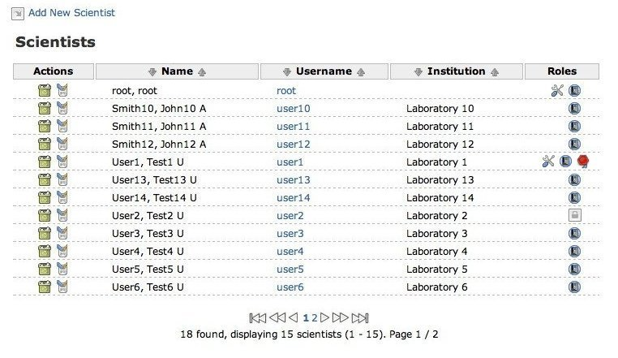

OMERO.webadmin User Guide
| Table of Contents | Up: 4. How to do ...? | Previous: 4.1. How to log in? | Next: 4.3. How to add a new user? | Down: 5. Troubleshooting |
4.2. How to manage users?
To manage users, click on the Scientists button in the toolbar to display the list of existing users (see Figure 4.1-2). You can then perform various Actions :
- add a new user (see Section 4.3),
- import many users from external source (see Section 4.4),
- delete a user (Section 4.5),
- edit user (see Section 4.6).
|  |
| Figure 4.2-1 : List of Users |
On the table Role column we can see icons which represent user attributes:
-
 - User is
active and can log in to the system.
- User is
active and can log in to the system. -
 - User is in
administration role.
- User is in
administration role. -
 - User is
authenticated by Ldap server.
- User is
authenticated by Ldap server.
Under the table will appear the data scroller if the list includes more than fifteen users. Arrows or numbers are links and allows you to switch between pages

|
| Figure 4.2-2 : List of Users |